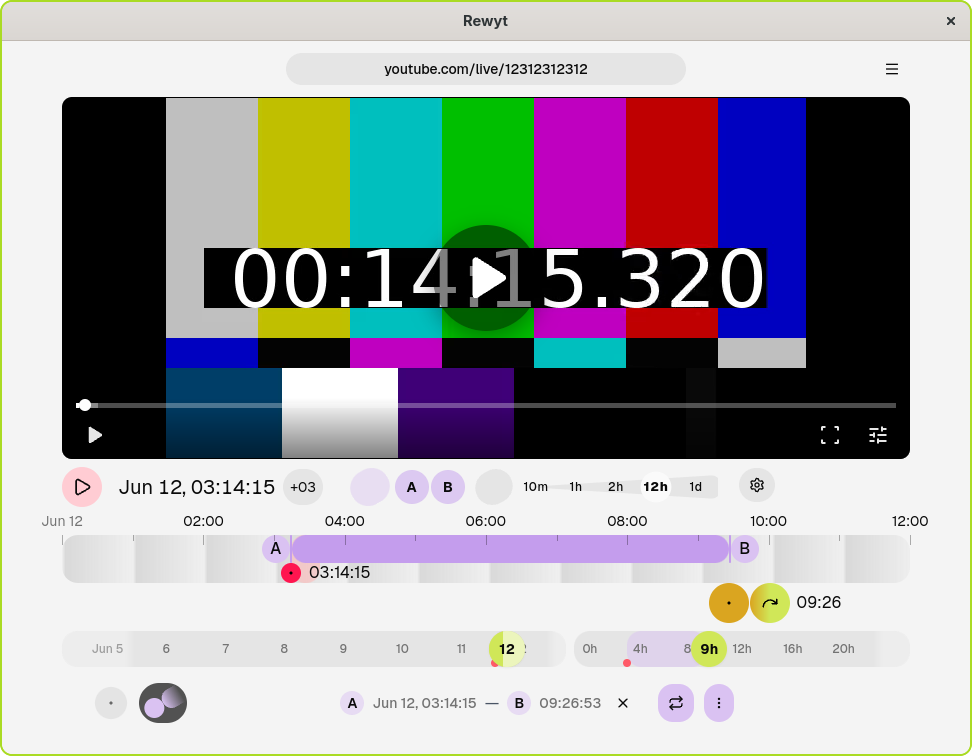
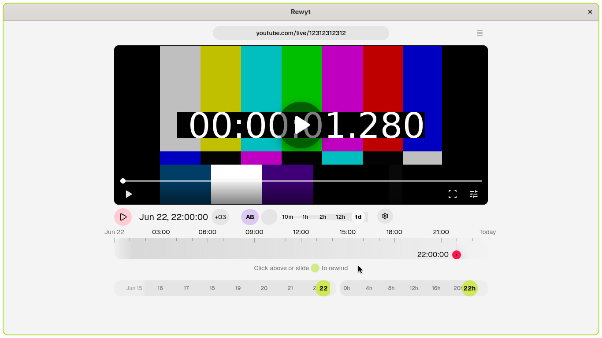
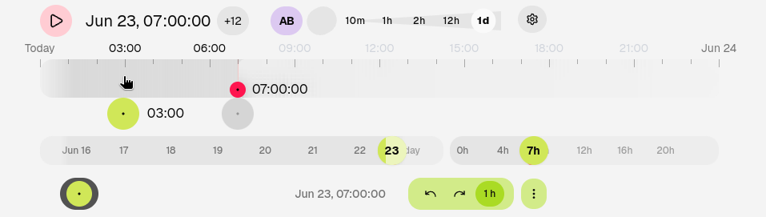
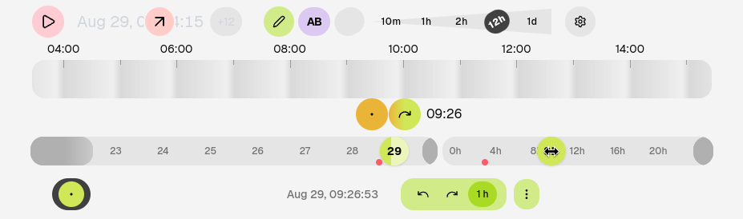
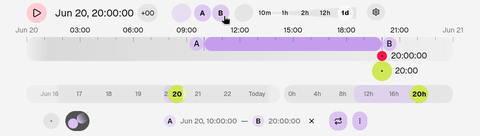
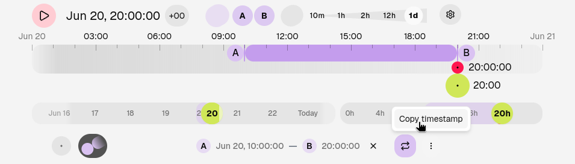
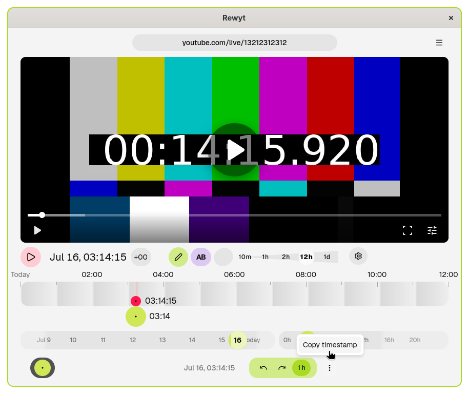
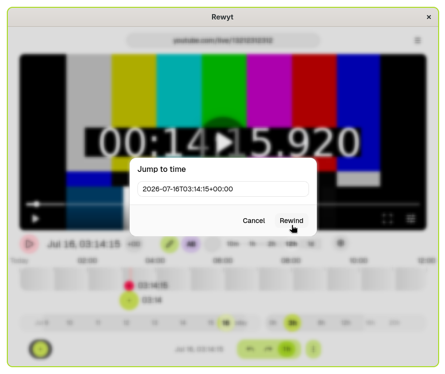

Rewyt — Rewatch YouTube live streams
Rewyt is a desktop app for rewatching past moments of YouTube live streams, beyond YouTube’s limits. You can navigate and play streams interactively in the app or in your browser.
Available on Linux, macOS, and Windows. Built on top of ypb and yt-dlp.

Get started
- Quickstart — Get up and running with Rewyt
- Installation options — Choose your installation method
Get started with Rewyt
Learn how to install Rewyt and start rewatching YouTube live streams.
Installation
Rewyt comes as a desktop app (pre-built binary) or a web app (container).
- Desktop app: choose this if you already have
yt-dlpinstalled - Web app: choose this if you don’t, or prefer a self-contained setup
Desktop app
Download the binary for your platform from the latest release and unzip it to your working directory.
For prerequisites and platform details, see Desktop app.
Web app
Running Rewyt in containers gives you an isolated environment with yt-dlp,
ffmpeg, and ypb pre-installed, along with the PO token provider.
Prerequisites: Podman or Docker, with Compose.
macOS/Windows only, Podman: Initialize the Podman machine (one-time setup):
podman machine init && podman machine start
Pull the compose file and extract it to a local directory:
podman artifact pull ghcr.io/xymaxim/rewyt-compose
podman artifact extract ghcr.io/xymaxim/rewyt-compose ~/rewyt-app
cd ~/rewyt-app
Start the app:
podman compose up -d
Open the app in your browser:
http://localhost:8080
See Web app for configuration options and more details.
Verify installation
Open the app to see a welcome screen, where you can verify that your installation is complete. If something’s missing, you’ll see a warning describing what’s needed. Otherwise, you’re ready to go.
Initial setup
Rewyt relies on yt-dlp’s network-related options and cookies. Where you set them depends on how you installed Rewyt:
- Desktop app: uses your local yt-dlp configuration file directly
- Web app: uses a yt-dlp configuration file mounted into the container, set
by editing the
.envfile, see Configuration for details
If YouTube responds with a “Sign in to confirm you’re not a bot” error while loading a stream, you’ll need to provide cookies from a signed-in browser session. See yt-dlp’s wiki on how to export and pass cookies to yt-dlp.
Rewatch a specific moment
Open a live stream
To get started, you’ll need a live stream to rewind. If you’re not sure what to watch, the Cornell Lab Bird Cams project has beautiful bird cam streams from around the world. Let’s use the Northern Royal Albatross nesting cam at Taiaroa Head, New Zealand.
Copy the YouTube link of the live stream and paste it into the input field in the app. Wait for the stream to load. You’ll see the main interface, with the main controls, timeline, and sliders.

Set a timezone
By default, the app displays time in your local system timezone. Since you’re watching a stream from New Zealand, it’s more convenient to match the stream’s local time instead.
Click the timezone label in the time display, below the video, to open the timezone selector. Select New Zealand Standard Time (UTC+12) or New Zealand Daylight Time (UTC+13).
Click the timeline
Click anywhere on the timeline. The stream immediately rewinds to that moment and starts playing.

Try zooming in on the timeline for a narrower time range, then click again to land closer to the moment you want.
Control with sliders
For more precision, use the rewind slider, days slider, and day slider instead. Drag the days slider to pick a day, then drag the day slider to set a specific time within that day. Sliders set your target time without rewinding yet.

When you’re happy with your selection, click the rewind button to jump there.
You can combine both methods: use the sliders to get close to a moment before rewinding, then click the timeline to rewind to the exact moment.
Next steps
Learn how to:
- Highlight and download excerpts: save a specific part of a stream
- Share and paste timestamps: share the moment you discovered and jump to a shared timestamp
Installation
Available on Linux, macOS, and Windows.
Rewyt comes in two distributions, each with its own installation process:
- Desktop app: Install platform-specific pre-built binaries along with additional dependencies
- Web app: Run in a container with all dependencies bundled, and access via your browser
Choosing installation method
The choice depends on your current setup and usage:
| Feature | Pre-built binaries | Container image |
|---|---|---|
| Setup | You already have yt-dlp installed with additional dependencies | You want a self-contained setup with all dependencies |
| Installation | Manual installation of binaries and dependencies | Requires Podman or Docker |
| Updates | Manual updating of all dependencies | Updating container image |
Requirements
Rewyt relies on yt-dlp:
- yt-dlp: For video info
extraction and downloading. Nightly builds are recommended. If you use
binaries, update with:
yt-dlp --update-to nightly
Additional dependencies
The following dependencies are optional but strongly recommended:
-
External JavaScript runtime: Required for full YouTube support
-
Proof-of-Origin (PO) token provider plugin: Required to avoid HTTP 403 errors
Desktop app
Prerequisites
Ensure the requirements are installed.
Install from binaries
Pre-built binaries for different platforms are available on the GitHub latest release page.
Download the binary for your platform and unzip it to your working directory.
Web app
Running Rewyt with containers is the recommended way to get started.
Note
This guide uses Podman, but Docker works too. Commands are mostly the same with
dockerin place ofpodman, though some steps (likepodman machineandpodman artifact) don’t have a direct Docker equivalent.
The app runs as two containers managed by Compose:
- Rewyt (ghcr.io/xymaxim/rewyt): the main app, with yt-dlp, ffmpeg, and ypb inside
- PO token provider (brainicism/bgutil-ytdlp-pot-provider): handles YouTube’s bot verification in the background
Prerequisites
macOS and Windows
On macOS and Windows, Podman requires a virtual machine. Initialize and start it once:
podman machine init
podman machine start
The machine starts automatically on subsequent reboots.
Set up
Pull the compose file and extract it to a local directory:
podman artifact pull ghcr.io/xymaxim/rewyt-compose
podman artifact extract ghcr.io/xymaxim/rewyt-compose ~/rewyt-app
cd ~/rewyt-app
This gives you compose.yaml and a .env file with defaults, containing ypb’s
configuration variables.
If YouTube responds with a “Sign in to confirm you’re not a bot” error, setting up cookies usually resolves it. See Configuration below.
Usage
Start the app:
podman compose up -d
Then open it in your browser:
http://localhost:8080
When done, shut down the app and the PO token provider sidecar:
podman compose down
Configuration
The .env file holds ypb’s configuration variables. See
ypb’s Configuration section
for what’s available and how to set them.
For example, to use cookies, export them from your browser into a
cookies.txt file, place it inside your YPB_YTDLP_CONFIG_DIR, then
reference it from your yt-dlp config file:
--cookies /path/to/cookies.txt
Update the app
podman compose pull
Overview
Rewyt is built with Go, Svelte, Shaka Player, and packaged with Wails.
On startup, the Go backend starts ypb, which fetches video info via yt-dlp. When you rewind to a moment, the Svelte frontend requests an MPEG-DASH manifest from ypb, which generates one with proxied URLs. During playback, Shaka Player streams video through ypb, which proxies media segments from YouTube and handles connection errors.
Highlight and download excerpts
This guide shows you how to highlight a live stream excerpt and download it as a video file.
Prerequisites
Rewyt doesn’t download excerpts directly, you need ypb for that.
- Rewyt installed as a desktop app or web app
- ypb installed
Note
If you’re running Rewyt as a web app,
ypbis already bundled inside its container, no separate install needed. Steps 1 and 2 below still apply, but for the download step, see Download excerpts with Compose instead.
Steps
-
Highlight an excerpt
Use the A and B buttons (or
aandbkeyboard shortcuts) to mark the start and end of your excerpt on the timeline.
-
Copy the timestamp
Open the Highlight tab at the bottom of the interface. Click More, then select Copy timestamp. This copies a timestamp that tells ypb exactly which part of the stream to download, for example:
2026-06-20T10:00:00+03:00/2026-06-20T20:00:00+03:00
-
Download the excerpt
Run the download command with the copied timestamp and the YouTube video ID:
ypb download 2026-06-20T10:00:00+03:00/2026-06-20T20:00:00+03:00 abcdefgh123
By the end, you will have a downloaded file in your working directory when done.
See also
See Create a time-lapse video to turn your excerpt into a time-lapse.
Download excerpts with Compose
This guide shows you how to download a highlighted live stream excerpt when Rewyt and ypb are run via Compose.
Prerequisites
Highlight the excerpt
Note
For highlighting excerpts in Rewyt, see Highlight and download excerpts.
Highlight the excerpt and copy its timestamp, for example:
2026-06-20T10:00:00+00:00/2026-06-20T10:30:00+00:00
Download the excerpt
Run ypb inside the already-running Rewyt container:
# --workdir must stay /media, it's where the container's volume is mounted
podman compose exec --workdir /media rewyt ypb download \
2026-06-20T10:00:00+03:00/2026-06-20T20:00:00+03:00 abcdefgh123
The file is saved to ./media by default, or the path set via
YPB_MEDIA_DIR.
Share and paste timestamps
This guide shows you how to copy a timestamp from the stream and jump to a shared one.
Copy a timestamp
-
Select a time on the timeline
Click on the timeline to rewind to the moment you want to share.
-
Copy the timestamp
Open the Selected tab at the bottom of the interface. Click More, then select Copy timestamp. This copies an ISO timestamp to your clipboard, for example:
2026-06-20T14:30:00+03:00
Share this timestamp with others so they can jump to the exact same moment.
Jump to a shared timestamp
-
Open the Jump to time dialog
Click the Jump to time button in the main bar.
-
Paste the timestamp and rewind
Paste the ISO timestamp into the input field and click Rewind. The stream jumps to that moment and starts playing.

Usage disclaimer
This app unfortunately violates YouTube’s Terms of Service, so use it at your own risk. You might run into rate limits or get blocked if YouTube notices.
If you enjoy the videos you watch, please consider supporting the creators by subscribing to their channels and engaging with their content directly.
Sponsoring
Thank you for considering sponsoring Rewyt and ypb.
Both projects are maintained in personal time. Your support helps with:
- Fixing issues and adding new features
- Improving user documentation
- Maintaining Windows version
- Covering costs for testing infrastructure
How to sponsor?
Cryptocurrency
You can support the project using any of these cryptocurrencies:
| Currency | Address |
|---|---|
| Bitcoin (BTC) | bc1qhmm7d30q4cw93cfk09h6rk6hka9let0wtaa3uh |
| Ethereum (ETH) | 0x98570df8162C2A8736Cc54E4c67F8D83BA383C2a |
| Solana (SOL) | Fzj2zvkWzMSF1MXZCh3PvED7PLcVN6CG6FWTzxjJ89AM |
| Monero (XMR) | 4AQg1DhWHzVTyBoXtGBddTE1u38DHW4RzUDFwsxvsF4Mj2TSdwSjLkUWoU5s3njByhLPXr53tkUHdRz1FzqxGJVB4z5rbP3 |
Changelog
The format of this changelog is based on Keep a Changelog. Versions follow Calendar Versioning.
Unpublished
First release.